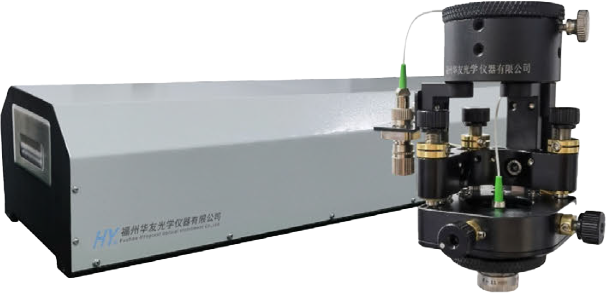
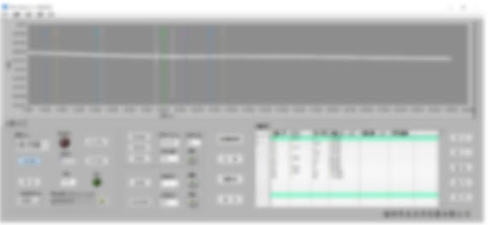

///
AST系列
非接触式镜面间隔测量仪
NON-CONTACT AIR-GAP TESTER

非接触镜面间隔测量仪也叫镜面定位仪，是采用迈克逊干涉原理精确定位透镜表面，从量。相比传统的机械接触式逐片测量方法，可以一次而实现透镜厚度和镜面空气间隔的精密测性实现组装好的镜头内所有镜片厚度和空气间隔的测量，并使其效率和精度更好，同时做到非读数并显示测量结果，结合镜组偏心仪一站式实现各接触式无损伤。配套的测量软件可以自动种透明或半透明光学镜组镜片倾斜、平移透镜厚度和空气间隔的精密测量和监测。
产品特点PRODUCT FEATURES
- 无损伤：非接触式测量
- 双波长：包含指示激光和近红外探测激光
- 高精度：显示分辨率0.2um，测量精度1um
- 方便性：含测量软件，操作简单，直接显示则量结果
- 双波长：包含指示激光和近红外探测激光
- 高精度：显示分辨率0.2um，测量精度1um
- 方便性：含测量软件，操作简单，直接显示则量结果

- 高效性：扫描一次，即可同时测量镜头内的竟片厚度和空气间隔值
- 一站式：可结合镜组偏心仪实现光学镜组镜倾斜、平移，透镜厚度和空气间隔的精密测量和监测
- 一站式：可结合镜组偏心仪实现光学镜组镜倾斜、平移，透镜厚度和空气间隔的精密测量和监测
| 主要技术指标 | 设备部件 | |||
| 型号 | AST300 | AST600 | AST800 | 间隔仪主机 |
| 测量范围(光程) | 300mm | 600mm | 800mm | 光电探测头 |
| 激光波长 | 测量波长：1310nm 指示波长：632nm | 运动控制箱 | ||
| 精度 | 显示分辩率：0.2um 测量粗度：+-1um | 光源及控制器 | ||
| 测量速度 | 15秒/100mm | 测量软件及操作电脑 | ||
获取详细参数
查看视频解说